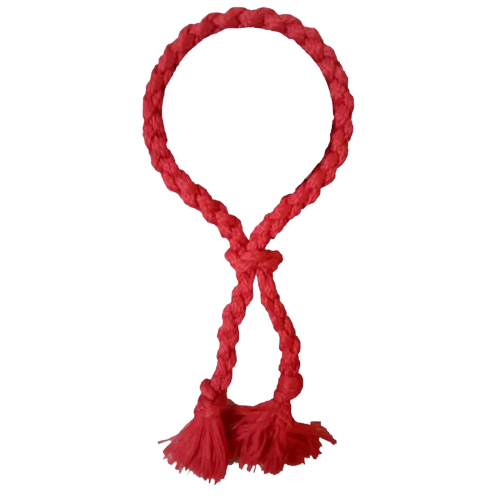

O kruang vermelho representa um avanço importante na jornada do praticante de Muay Thai. Nesta fase, o aluno já possui uma base sólida e começa a desenvolver mais intensidade, força e confiança durante os treinos. Os golpes passam a ser executados com mais potência e precisão, e o praticante começa a entender melhor o timing, a distância e a aplicação das técnicas em situações mais reais. Os treinos se tornam mais exigentes, incluindo combinações mais complexas e maior ritmo. Além da evolução física, o aluno também amadurece mentalmente, aprendendo a manter o foco, a disciplina e o controle emocional mesmo em treinos mais intensos. O kruang vermelho é a fase onde o praticante começa a se destacar, consolidando sua técnica e se preparando para níveis mais avançados dentro do Muay Thai.
Nesta fase, o praticante já demonstra mais confiança e firmeza nos movimentos. Os golpes são mais fortes, o ritmo de treino é mais intenso e a execução técnica se torna mais consistente. O aluno começa a desenvolver seu próprio estilo de luta, adaptando técnicas de acordo com suas características físicas e habilidades.
O tempo médio neste nível varia entre 3 a 6 meses, dependendo da frequência de treino e da evolução do praticante. A progressão depende do domínio das técnicas e da capacidade de aplicá-las com eficiência.
A cor vermelha simboliza intensidade e energia, representando um nível onde o praticante já demonstra mais agressividade controlada e confiança na luta.
O objetivo do kruang vermelho é desenvolver potência, velocidade e eficiência, fazendo com que o praticante consiga aplicar técnicas com mais precisão e segurança em situações de combate.
Trabalhe combinações com intensidade, mas sem perder a técnica. Foque em manter o equilíbrio e a postura mesmo durante golpes mais fortes. Treinar com parceiro pode ajudar a melhorar o tempo de reação e a leitura da luta.
Após essa fase, o praticante evolui para o kruang vermelho ponta azul claro, onde o nível técnico se torna ainda mais refinado e estratégico.